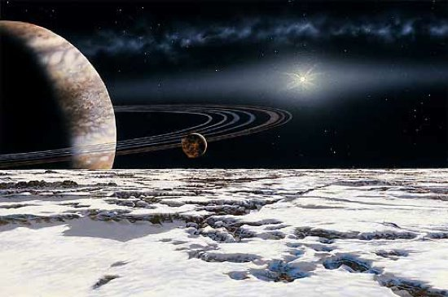

After years wondering how to give meaning to my life, I decided to go to the space: away from people, closer to the stars !
Oldest Planet PSR B1620-26 b (discovered: May 30, 1993, confirmed: July 10, 2003)PSR B1620-26 b, nicknamed “Methuselah” for biblical reasons, is the oldest exoplanet found to date at 13 billion years old, possibly the oldest ever considering the Universe itself is only a little older at 13.7 billion years old! It was found deep inside the core of what is called a “globular cluster” of stars, which are composed of the very first stars that were formed right after the Big Bang. |
|
|  |
Closest to Solar System Epsilon Eridani (Epsilon Eridani b discovered August 7, 2000)It’s actually a system of planets, not unlike how we like to call our own solar system. The name “Epsilon Eridani” stands for the parent star, or their “sun,” and it has two probable planets orbiting it: one confirmed (Epsilon Eridani b) another yet unconfirmed (Epsilon Eridani c), making it the closest planetary system at just over 10 light years from the solar system. |
Most Exoplanets in One System 55 Cancri (55 Cancri b discovered April 12, 2006)It is a binary star system, a two-star multiple star system just like Tatooine from Star Wars, but this time it has five medium-size “Neptune-mass” planets orbiting around the larger star 55 Cancri A, in order of distance from parent star: 55 Cancri e, b, c, f, and d (or 55 Cancri Ae, Ab, Ac, Af, and Ad to distinguish them from the other star, 55 Cancri B). This is the most number of confirmed planets orbiting one star other than the sun and hence raises the possibility of finding more planets around stars with or without known planetary systems by showing that our solar system of many planets is not unique. |
This page has been coded on the planet Mars. That was the best travel of my entire life !!!